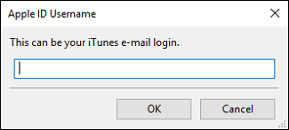

Size:21.18 MB / Version:1.1 / MD5:34c6b2ff4d21b6bf29f16d1793db8fd5 / SHA1:e12cda775b8b8764e100eb7e6217b8ed7637ef20
2. Cydia impactor available at http://www.cydiaimpactor.com/ .
(Special Note: This tool, developed by Saurik, is used to sign the ipa file so that Pangu jailbreak tool can be executed on iOS devices. Cydia impactors does not collect your apple id and password. All the information is only used for applying a personal free certificate from Apple.)
3. A computer (Cydia impactor runs on all major OSes, including Windows, OS X, and Linux)
4. A valid Apple ID. (In case that you do not want to use your current Apple ID to apply the personal certificate for any reason, we suggest you apply a new Apple ID and use it)
2. The certificate will expire in 7 days. If your certificate gets expired, you need to follow the guide to install the jailbreak IPA again.
1. Unzip the Cydia impactor file and run it.
2. Connect your iOS device to your computer and trust the computer on your iOS device.
3. Drag NvwaStone_1.0.ipa into Cydia impactor app.

4. Input you email address( it’s your apple id)

5. Input your apple ID password.

6. Click OK button to continue.

7. Cydia impactor will automatically prepare everything based on your inputs and sign the IPA file. If everything is OK, the IPA file should be installed in your iOS device correctly. If you get error notifications, you probably input incorrect Apple ID or password.
8. On your device, Tap Settings > General > Device Management. You then see a profile for the developer under your “apple ID” heading. Tap the profile to establish trust for this developer. (An Internet connection is required to verify the app developer's certificate when establishing trust.)
9. On your device, find Pangu App and run it.
10. Click the "start" button to jailbreak your device.